La Esencia de la Acción: ¿Qué es un Agente?
En el vasto teatro de la computación, un agente no es simplemente un conjunto de líneas de código que esperan ser ejecutadas. Es, en su definición más pura, cualquier entidad que percibe su entorno y actúa sobre él. Como un artesano que observa la madera antes de tallarla, el agente utiliza sus sensores para recibir información y sus actuadores para transformar la realidad.
El Diálogo con el Entorno
Para entender a un agente, debemos observar su conversación continua con el mundo. A cada fragmento de información que sus sensores capturan lo llamamos percepto. A lo largo de su existencia, el agente acumula una secuencia de perceptos, un historial que define todo lo que ha conocido hasta el momento presente.
|
La identidad de un agente reside en su función. Matemáticamente, es el mapa que asocia cada posible secuencia de perceptos con una acción. Su programa, por otro lado, es la encarnación física de esa función: el motor que corre sobre la arquitectura. |

El Ideal de la Racionalidad
No nos conformamos con agentes que simplemente actúen; buscamos la racionalidad. Ser racional no implica ser perfecto, sino actuar con propósito. Un agente es racional si, basándose en lo que ha percibido y en el conocimiento que ya posee, selecciona la acción que maximiza su medida de desempeño.
|
La racionalidad es hija de la medida de éxito que le otorgamos. Si definimos mal el objetivo, el agente será "estúpidamente racional", alcanzando metas absurdas con una eficiencia impecable. |
La Capacidad de Aprender
Un agente que no varía su proceder ante un mundo cambiante es poco más que un autómata. El aprendizaje es la facultad de elevar el desempeño tras observar los resultados de sus propios actos. Es el proceso de ajustar sus mecanismos internos para que sus acciones futuras armonicen mejor con lo que el mundo le ha enseñado.
-
Aprendizaje Supervisado: Como un aprendiz que sigue los pasos de un maestro, el agente recibe ejemplos de "entrada y salida" para aprender a generalizar.
-
Aprendizaje por Refuerzo: Es la escuela de la experiencia pura; el agente recibe recompensas o castigos y debe descubrir por sí mismo qué camino le lleva a la gloria acumulada.
-
Aprendizaje No Supervisado: El agente busca patrones ocultos y armonías en los datos sin que nadie le diga qué está buscando.
|
En su búsqueda de la verdad, el agente racional debe abrazar la Navaja de Ockham: ante dos explicaciones que expliquen igual de bien lo observado, la más sencilla suele ser la que refleja la verdadera naturaleza del mundo. |
Tipos de Agentes: La Escalera de la Sofisticación
No todos los agentes nacen iguales. Existe una jerarquía natural que va desde el más simple reflejo hasta la deliberación profunda. Cada escalón añade una capa de complejidad que le permite enfrentar entornos cada vez más hostiles.

Agente Reactivo Simple
Es el más elemental. Opera con reglas directas de la forma "si percepto X, entonces acción Y". No tiene memoria ni modelo del mundo. Funciona admirablemente en entornos totalmente observables y deterministas, pero se pierde en la niebla de la incertidumbre.
defmodule Agente.Reactivo do
@moduledoc """
Un agente reactivo simple que selecciona acciones
basándose exclusivamente en el percepto actual.
"""
@doc "Mapea perceptos a acciones mediante pattern matching."
def actuar(:sucio), do: :aspirar
def actuar(:limpio), do: :mover
def actuar(_desconocido), do: :no_operar
end
# Uso:
Agente.Reactivo.actuar(:sucio) # => :aspirar
Agente.Reactivo.actuar(:limpio) # => :moverAgente Basado en Modelo
Cuando el mundo no se muestra por completo, el agente necesita construir un modelo interno de aquello que no puede ver. Mantiene un estado que actualiza con cada nuevo percepto, permitiéndole recordar lo que ya no está frente a sus ojos.
defmodule Agente.ConModelo do
@moduledoc """
Un agente que mantiene un estado interno del mundo
para tomar decisiones informadas.
"""
defstruct [:posicion, :mapa, :historial]
def nuevo(posicion_inicial) do
%__MODULE__{
posicion: posicion_inicial,
mapa: %{},
historial: []
}
end
def percibir(agente, percepto) do
mapa_actualizado = Map.put(agente.mapa, agente.posicion, percepto)
%{agente | mapa: mapa_actualizado, historial: [percepto | agente.historial]}
end
def actuar(%{mapa: mapa, posicion: pos} = agente) do
case Map.get(mapa, pos) do
:sucio -> {:aspirar, agente}
:limpio -> {:mover, %{agente | posicion: siguiente_posicion(pos)}}
nil -> {:explorar, agente}
end
end
defp siguiente_posicion(:izquierda), do: :derecha
defp siguiente_posicion(:derecha), do: :izquierda
endAgente Basado en Objetivos
Este agente no solo sabe cómo es el mundo, sino que sabe a dónde quiere llegar. Puede planificar, considerar las consecuencias de sus acciones y buscar la secuencia que lo acerque a su meta. Es el primer escalón donde aparece la deliberación.
Agente Basado en Utilidad
El más refinado de todos. No le basta con alcanzar un objetivo; busca alcanzarlo de la mejor manera posible. Posee una función de utilidad que asigna un valor numérico a cada estado del mundo, y su misión es maximizar esa utilidad esperada. Es el modelo que más se acerca al ideal de la racionalidad económica.
Las Cuatro Visiones de la Inteligencia
A lo largo de la historia, hemos intentado definir la Inteligencia Artificial a través de cuatro cristales distintos, dependiendo de si buscamos imitar la humanidad o alcanzar la razón pura:
| Enfoque | Descripción |
|---|---|
Actuar como Humanos |
El sueño de Alan Turing. El sistema debe ser indistinguible de nosotros en una conversación (Test de Turing). |
Pensar como Humanos |
El camino de la Ciencia Cognitiva. No basta el resultado; queremos que los procesos internos imiten la mente humana. |
Pensar Racionalmente |
La tradición logicista. El uso de silogismos y lógica formal para garantizar que cada paso sea una verdad irrefutable. |
Actuar Racionalmente |
El enfoque del Agente Racional. Hacer "lo correcto" para maximizar el éxito, incluso cuando el tiempo no permite un razonamiento perfecto. |